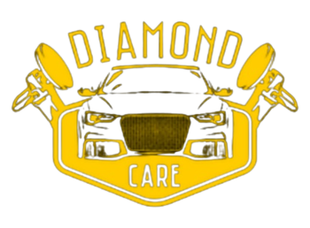
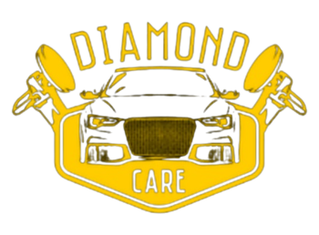

Jesteśmy firmą detailingową, oferującą szeroki zakres usług dla samochodów. Specjalizujemy się w myciu, polerowaniu, zabezpieczaniu powłok ceramicznych, usuwaniu rys i renowacji wnętrz. Nasz doświadczony zespół zapewnia doskonały wygląd i długotrwałą ochronę. Wybierz Diamond Care dla wysokiej jakości usług detailingowych.
Pranie wnętrza i czyszczenie całego środka
Usługa ta pomaga w oczyszczeniu wnętrza pojazdu z kurzu, brudu, plam i innych zabrudzeń. Dzięki temu procesowi można przywrócić świeżość i czystość w kabinie samochodu, zapewniając przyjemne środowisko podróży.
Czyszczenie i impregnacja skór oraz całego środka
Ta czynność ma na celu nie tylko oczyszczenie skóry zanieczyszczeń, ale także zastosowanie impregnacji, która tworzy ochronną warstwę na skórze, zapobiegając jej uszkodzeniom, wchłanianiu płynów i utracie elastyczności. Ponadto, czyszczenie i odświeżanie innych powierzchni wnętrza samochodu, takich jak plastiki, panele drzwiowe czy deska rozdzielcza.
Malowanie skór
Proces malowania skór ma na celu odświeżenie lub zmianę koloru tapicerki skórzanej w samochodzie. Dzięki temu można przywrócić oryginalny wygląd, zakryć uszkodzenia lub dostosować wnętrze pojazdu do własnych preferencji stylistycznych.
Korekta lakieru
Korekta lakieru, obejmująca zarówno jednoetapowe usunięcie drobnych zarysowań, matowości i hologramów, jak i bardziej zaawansowany proces wieloetapowy, który usuwa głębsze zarysowania, defekty i oksydację lakieru, przywracając mu blask i doskonałe wykończenie. Dostępna w wersji one step oraz wieloetapowej.
Powłoka ceramiczna
Ceramika to rodzaj ochronnej powłoki nakładanej na lakier samochodu. Oferuje ona trwałą ochronę przed czynnikami atmosferycznymi, promieniowaniem UV, zarysowaniami i utlenianiem. W zależności od wybranego rodzaju ceramiki, trwałość ochrony może wynosić rok, dwa lata lub nawet pięć lat. W ofercie posiadamy roczna/dwulenia/5letnia
Oklejanie folia PPF oraz zmiana koloru
Oklejanie auta folią ochronną PPF (Paint Protection Film) to metoda zabezpieczania lakieru przed zarysowaniami, kamieniami i innymi uszkodzeniami. Zmiana koloru auta za pomocą folii pozwala na odświeżenie wyglądu pojazdu, zmianę jego stylu i nadanie mu unikalnego charakteru.

Przyciemnianie szyb
Ta usługa ma kilka korzyści. Przede wszystkim przyciemnianie szyb pomaga w ograniczeniu przenikania promieni słonecznych do wnętrza pojazdu, co skutkuje zmniejszeniem nagrzewania się kabiny i ochroną przed nadmiernym promieniowaniem UV. Dodatkowo, przyciemnione szyby zwiększają prywatność wewnątrz samochodu oraz nadają mu stylowy wygląd.
Przyciemnianie lamp
Ta czynność polega na aplikowaniu specjalnej folii ochronnej na reflektory i lampy samochodu, co chroni je przed zarysowaniami, matowością oraz promieniowaniem UV. Dodatkowo, oklejanie lamp może zmienić wygląd reflektorów, nadając im bardziej agresywny lub indywidualny charakter.
Polerowanie reflektorów
Polerka lamp wpłynie na polepszenie wyglądu twojego auta zniweluje widoczne rysy oraz poprawi walory świetlne Dodatkowo lampy zostaną zabezpieczone.
Regeneracja reflektorów
Rozklejanie lamp oraz metalizacja odbłyśnikow pozwala uzyskać światło tak dobre jak w nowym samochodzie.
Pakiet środek plus zewnątrz
Jest to kompleksowe podejście do czyszczenia i pielęgnacji pojazdu, które obejmuje zarówno wnętrze, jak i zewnętrzną powierzchnię auta. Usługa ta łączy pranie wnętrza, czyszczenie skór, impregnację, korektę lakieru, przyciemnianie szyb i inne czynności, w celu kompleksowego odświeżenia i ochrony samochodu.
Czyszczenie podwozia
Jest to proces usuwania zabrudzeń, osadów z drogi, soli i innych substancji z dolnej części pojazdu. Czyszczenie podwozia pomaga w utrzymaniu czystości i zapobiega korozji, a także może przyczynić się do lepszej wydajności układu hamulcowego i zawieszenia.